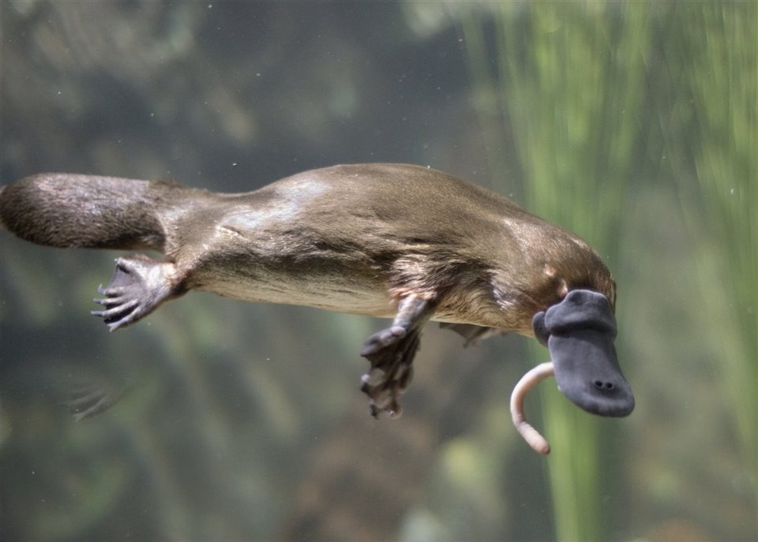

Los ornitorrincos desvelan secretos sobre la evolución de los mamíferos
El análisis genético de los ornitorrincos y los equidnas ha proporcionado
a los científicos algunas claves sobre la evolución de los mamíferos.
Estas extrañas criaturas son los únicos mamíferos conocidos que ponen
huevos y ahora se sabe que cuentan con 10 cromosomas sexuales en lugar de
los dos que normalmente tienen el resto de mamíferos, entre ellos los
humanos.
